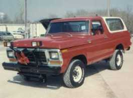
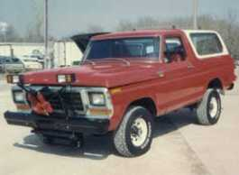

Homeowner and Hobbiest Blasting and Painting
ANTIQUE RESTORATION
Metal antiques and collectibles of any size can be sandblasted and restored to improve appearance and maintain value. We will remove rust, disassemble, repair, prime, and paint as needed. If you want more information on painting, click here.
VEHICLE RESTORATION
Burrie Enterprises has successfully restored many vintage cars and trucks like the Ford Bronco in the picture above as well as more modern vehicles. We know vehicle restoration is a long and tedious project. Perfection is your goal and ours as well. Not only can we remove old paint and rust, but we can also fill any holes that may have found their way into the car body over time. In the blasting process, we can use plastic media or baking soda to be gentle on the vehicle yet get the old paint off. Afterwards, we apply a professional paint job to help make your vehicle look its best for years down the road.